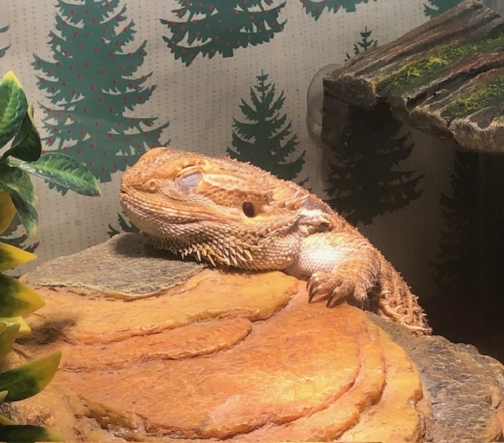

About Me
Hi! My name is Camille Ahumada, I'm a student in Internet Programming :D! I usually go by Cammy, but feel free to call me whichever name!! I am majoring in Computer Science with a concentration in Web Development! A fun fact about me is that I am from Califronia and am currently attending Columbus State University. Meaning I'm a long way from home!
What This Page Will Become
This plain page is just the starting point. Over the semester, you'll layer in the skills below ; often by editing this very page.
- CSS LayoutFlexbox & Grid for real page design
- JavaScriptMake pages interactive
- APIsPull in live data
- Python/FlaskBuild your own backend
- ReactBuild a full responsive app
- UsabilityTest and improve real interfaces
Gallery

Get In Touch
Add your email, a social link, or however you'd like classmates to be able to reach you.